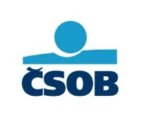

Pracovní zkušenosti

03/2016 – doposud: Československá obchodní banka, a. s.
- Produktový manažer
- Podpora digitálních kanálů (elektronické bankovnictví)
- řešení incidentů v aplikaci Service Now, komunikace s dodavateli, školení nových zaměstnanců, poskytování podpory pobočkám, gesce a testing bankovních aplikací (ICARA, SecureStore).
2011 – 03/2016: Československá obchodní banka, a. s.
- Asistent firemních bankéřů
- Obsluha klientů firemních bankéřů, administrace smluvní a klientské dokumentace, monitoring úvěrové angažovanosti.
2008 – 02/2011: Československá obchodní banka, a. s.
- Pokladník
- Pokladní služba s hmotnou odpovědností, poskytování poradenství.